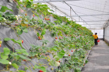

硕丰草莓是中国江苏省农业科学院园艺研究所从美国引进的MDUS*MDU4493杂交后代中培育而成，1989年通过鉴定。硕丰草莓果实短圆锥形，平均单果重15-20克；果面平整，橙红色，有光泽；果肉红色，质细韧，果心无空，风味偏酸，味浓；可溶性固形物10%-11%，糖/酸比较低，维生素C51.9毫升100克
硕丰草莓植株长势健壮，株态直立，矮而粗壮，直立；叶征厚、圆形、平展，叶面光滑；花序高于叶面或与叶面平，每株平均有花序三个，每序平均着生8.6朵花。该品种果实硬度大，极耐贮运，在常温下塑料小盒中保存3-4天不变质。丰产性能好，且小果少，耐高温及抗寒能力均强。休眠深，为晚熟、丰产、多抗的优良草莓品种，适宜长江中下游露地栽培。[3]
明晶草莓为中国沈阳农业大学从美国品种“日出（Sunrise）”自然杂交实生苗中选出的早熟品种，1998年通过审定。果实大、近圆形、整齐。一级序果平均重27.2g，最大果重43g。果面红色、平整、光泽好，果实硬度较好，果肉红色、致密、髓心小。风味酸甜，含可溶性固形物8.3%，品质上等。果实硬度较大，果皮韧性强，耐贮藏运输。植株较直立，分枝较少，叶片椭圆形，呈匙状上卷，叶较厚、具光泽，叶色较深。株高和株径约33cm。花序低于叶面，两性花，单株平均抽生花序1.8个，每花序平均有9.7朵花。
明晶草莓越冬性、抗寒性、抗晚霜性和抗寒性较强。地区适应性广。每亩栽培密度宜1万-1.2万株，为早中熟品种，丰产。适宜在东北和华北露地栽培[3]
星都1号草莓和星都2号草莓是中国北京市农林科学院林业果树研究所1990年以All star（全明星）为母本，丰香为父本杂交培育而成的新品种，2000年通过北京市农作物品种审定委员会审定。
星都1号植株生长强势，株态较直立；叶椭圆形，果实圆锥形，红色偏深有光泽，种子黄绿红兼有，分布均匀。北京地区露地栽培成熟期5月12日，果实发育期为25-30天，一级序果平均果重25g，最大果重42g，果实外观评价上等，风味酸甜适中，香味浓，肉质评价上等，可溶性固形物含量为8.85%，每100g果肉中含维生素C为54.49mg，总糖4.99%，含酸量1.42%，糖酸比3.5：1，果实硬度0.404kg/平方厘米；每亩产量1500kg-1750kg。星都1号草莓果肉深红色，适合鲜食及加工速冻制汁、制酱。为早熟、大果、优质果实硬度大，耐贮运品系，适于半促成栽培。
星都2号草莓植株生长强势，株态较直立，果实圆锥形，红色略深有光泽；种子黄、绿、红色兼有。北京地区露地栽培成熟期为5月7日，果实发育期为25-30天，以及序过平均果重27g，最大果重59g；外观评价上，风味酸甜适中，香味较浓，肉质评价中上等，可溶性固形物含量为8.72%，没100g果肉中含维生素C为53.43mg，总糖5.44%，含酸量1.57%，糖酸比3.46：1，果实硬度0.385kg/平方厘米；每亩产量1500-1800kg，可用于保护地栽培。果肉深红色，适合鲜食和加工。星都2号草莓为早熟、大果、丰产、果实硬度高、 耐贮运的新品系。[3]
草莓喜温凉气候，草莓根系生长温度5-30℃，适温15-22℃，茎叶生长适温为20-30℃，芽在-15-10℃发生冻害，花芽分化期温度须保持5-15℃，开花结果期4-40℃。草莓越夏时，气温高于30℃并且日照强时，需采取遮荫措施。
草莓为喜光植物，但又有较强的耐荫性。光强时植株矮壮、果小、色深、品质好。中等光照、果大、色淡、含糖低，采收期较长；光照过弱不利草莓生长。
草莓根系分布浅、蒸腾量大，对水分要求严格，但不同生长期。草莓对水分的要求又稍有不同。早春和开花期，草莓需要衣分直小低于土壤最大持水量的70%。果实生长和成熟期需求最多，达80%以上，采收之后，抽出匍匐茎和发新不定根，也需土壤含水量不低于70%，秋季是植株积累营养和花芽形成期，土壤水分也不得低于60%，草莓不耐涝，要求土壤有良好通透性，注意田间雨季排水。
草莓宜生长于肥沃、疏松中性或微酸性壤土中，过于粘重土壤不宜栽培，沙土多施厩肥，勤灌水，也可种草莓。[3]
草莓地应选择地势稍高，地面平整，排灌方便，光照良好，有机质丰富，保水力强，通气性良好，PH值呈弱酸性或中性的肥沃土地。前茬作物以蔬菜、豆类、瓜类、小麦等较好。
草莓栽植前应彻底清除杂草，并施入腐熟农家肥，一般每亩施有机肥5000千克，过磷酸钙50千克，氯化钾50千克做基肥，撒施均匀后耕翻30-40厘米，促进土壤熟化，土地平整后按100厘米做畦，畦面宽80厘米，畦沟宽20厘米，畦高15厘米，畦长20米。[4]
定植质量的好坏对草莓的生长及以后的管理有很大影响，因此在定植要下细功夫。
栽后要浇一次透水，栽后一周内一般早、晚各浇一次水，以后要使土壤经常保持湿润状态，以利成活。[3]
草莓从定植到开花结果需要较多的肥，除要施足基肥外，还要适时补充肥料，可在果实膨大期和采收始期亩施草莓专用肥或磷酸二氨10公斤。结合浇水以200倍液肥形式沟施效果较好，长势好的田块仅喷施0.1-0.2%磷酸二氢钾2-3次，也有一定的增产效果，成花期原则上不喷。采果田施肥原则是适N重P、K，必须保持合理的配比关系，才能获得较高产量和最大效益。[4]
地膜覆盖有显著的早熟、增产效果，还能提高果实质量，增加商品果率。一般在3月中下旬开始盖膜。注意盖膜前一定要摘除植株上的枯叶、老叶。[4]
采收期是草莓种植农户繁忙的季节，除了做好采收上市工作外。[4]
其它田间管理工作也需要同时进行：